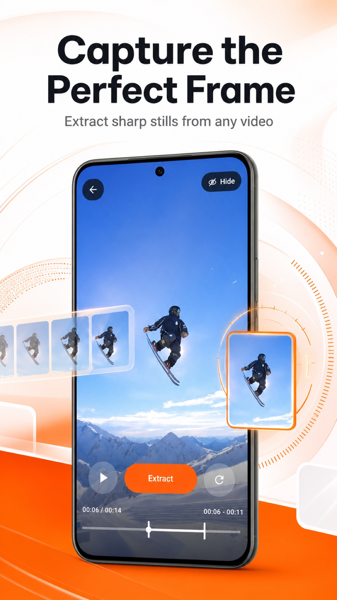

Get a photo from a video
The quickest route from a clip to a still image you can keep.
Read the guide →Video to photo, one frame at a time
Pick a video from your phone, find the exact frame, and save a still image to your photos. No account or upload is needed for the core workflow.
Free to download. Optional Pro access and ads are explained in each store listing.

A simple workflow
Your selected video and extracted frames are processed on your device.
Open a clip from your Photos or gallery, or share it into Frame by Frame.
Select the time range, extract frames, and inspect them in a grid or fullscreen.
Save your favorite image to your device, or open the system share sheet.
Made for quick decisions
Review the extracted frames, open one fullscreen, zoom in, and move between nearby moments. It works especially well for action clips, sports footage, tutorials, and recordings where a split second matters.
Learn how to capture an action frame →Practical guides
The quickest route from a clip to a still image you can keep.
Read the guide →Find the split second that is easy to miss in fast footage.
Read the guide →Follow the same core steps on either phone.
Read the guide →